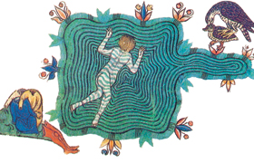

Lezione 7  Sacro romano impero
Sacro romano impero

«Fu certo uomo di grande cuore, ma temperò la sua magnanimità con la molta saggezza che ebbe dentro di sé così che mai lo spinse a fare alcunché la precipitazione, ma sempre si accinse con ponderato calcolo ad ogni sua cosa […].
Al momento del suo avvento felice vi erano pochi o punti uomini di lettere nel regno di Sicilia. Ma l’imperatore stesso istituì scuole di arti liberali e di ogni onorata scienza nel suo stesso regno, attirando dotti da ogni parte del mondo con generosi premi e stabilendo uno stipendio fisso tanto per loro quanto per gli studenti poveri a spese del suo proprio tesoro, affinché gli uomini di qualsiasi condizione o fortuna non si traessero indietro dallo studio della filosofia per alcuna circostanza di povertà […].
Tanto amò ed onorò la giustizia che a nessuno fu vietato contendere in giudizio addirittura con lo stesso imperatore per il proprio diritto ed egli non si prevaleva dell’altezza del potere imperiale, in modo da essere uguale davanti alla giustizia con colui che seco contendeva. E nessun avvocato esitava ad assumere la difesa di chiunque, fosse anco il più povero, dato che l’imperatore medesimo aveva stabilito che questo fosse permesso, stimando preferibile salvare la giustizia, magari col proprio danno, che vincere la causa».
(Niccolò de Jamsilla, Historia de rebus gestis Friderici II imperatoris, in Muratori, Rerum Italicarum Scriptores, VIII, in Spini, Disegno storico della civiltà, Volume I, Edizione Cremonese, 1989)